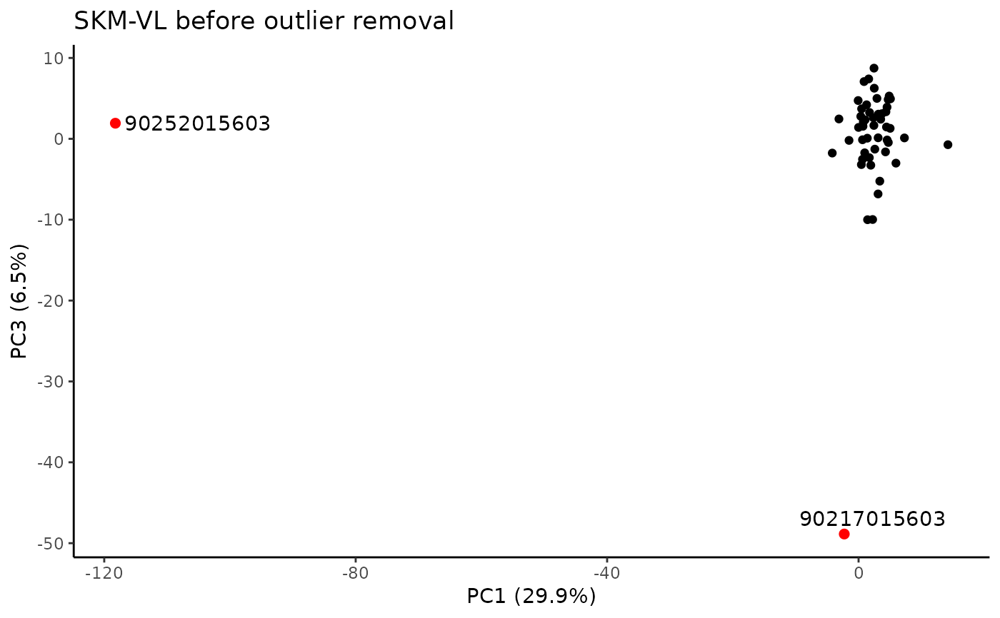

Identify samples that are outside of 5 times the interquartile range of principal components that explain at least 5% of variance in each tissue. Use only the 1000 most variable genes. This specifies RNA-seq outliers excluded from differential analysis by MoTrPAC.
Arguments
- tissues
character vector of tissue abbreviations for which to call RNA-seq outliers. See MotrpacRatTraining6moData::TISSUE_ABBREV for accepted values.
Value
NULL if there are no outliers, or a data frame with three columns and one row per outlier:
viallabelcharacter, sample identifier
tissuecharacter, tissue abbreviation, one of MotrpacRatTraining6moData::TISSUE_ABBREV
reasoncharacter, PC(s) in which the sample was flagged
See also
call_pca_outliers() for workhorse function and plot_pcs() for plotting function
Examples
transcript_call_outliers("SKM-VL")
#> TRNSCRPT_SKMVL_RAW_COUNTS
#> TRNSCRPT_SKMVL_NORM_DATA
#> SKM-VL:
#> PC1 PC2 PC3 PC4 PC5 PC6 PC7 PC8 PC9 PC10
#> 0.29908 0.09707 0.06524 0.03299 0.03006 0.02044 0.01973 0.01866 0.01758 0.01625
#> The first 3 PCs were selected to identify outliers.
#> PC outliers:
#> PC viallabel PC value
#> [1,] "PC1" "90252015603" "-118.23"
#> [2,] "PC3" "90217015603" "-48.868"
#> Plotting PCs with outliers flagged...
#> Plotting PCs with outliers removed...

 #> viallabel tissue reason
#> 1 90252015603 SKM-VL PC1
#> 2 90217015603 SKM-VL PC3
if (FALSE) {
transcript_call_outliers(c("SKM-GN","BLOOD"))
}
#> viallabel tissue reason
#> 1 90252015603 SKM-VL PC1
#> 2 90217015603 SKM-VL PC3
if (FALSE) {
transcript_call_outliers(c("SKM-GN","BLOOD"))
}